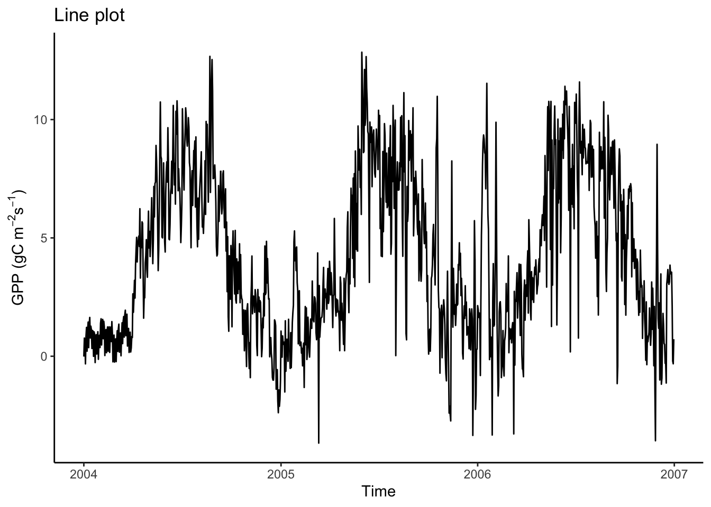
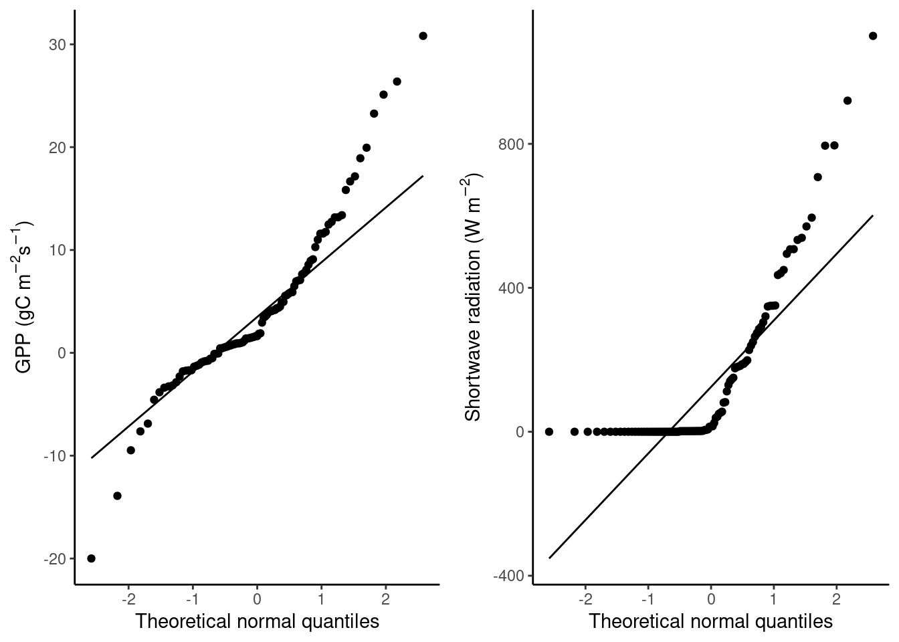

Chapter 8 Regression and classification
Chapter lead author: Pepa Aran
Contents:
- Difference between regression and classification
- Linear regression
- Logistic regression
- Regression metrics
- Classification metrics, another link
- Comparing models (AIC, …)
- Detecting outliers: identification via distributions [hist(), boxplot(), qqnorm()], multivariate (Cook’s Distance to get influential values)
- Feature selection, stepwise regression, multi-colinearity (vif)
- Performance assessment: Exercise for stepwise regression link, link
8.1 Learning objectives
After completing this tutorial, you will be able to:
- Understand the difference between regression and classification
8.2 Tutorial
First, let’s load some packages that we will use in this tutorial.
library(tidyverse)
library(ggplot2)
library(modelr)
library(forcats)
library(yardstick)
library(recipes)
library(caret)
library(broom)8.2.1 Types of models
Models try to explain relationships between variables through a mathematical formulation, particularly to predict a given target variable using other variables. Generally, we say that the target variable \(Y\) is a function (denoted \(f\)) of a set of explanatory variables \(X_1, X_2, \dots, X_p\) and some model parameters \(\beta\). Models can be represented as: \[Y \sim f(X_1, X_2, \dots, X_p, \beta)\]
This is a very general notation and depending on the structure of these components, we get to different modelling approaches.
The first distinction comes from the type of target variable. Whenever \(Y\) is a continuous variable, we are facing a regression problem. If \(Y\) is categorical, we talk about classification.
| Regression | Classification | |
|---|---|---|
| Target variable | Continuous | Categorical |
| Common models | Linear regression, polynomial regression, kNN, tree-based regression | Logistic regression, kNN, SVM, tree classifiers |
| Metrics | RMSE, \(R^2\), adjusted \(R^2\), AIC | Accuracy, precision, AUC, F1 |
8.2.2 Regression
In this section, we will introduce some regression models, their advantages and disadvantages, and metrics to measure their performance.
8.2.2.1 Linear regression
Theory
Let’s start with the simplest model: linear regression. You probably have studied linear regression from a statistical perspective, here we will take a data-fitting approach.
For example, we can try to explain the relationship between GPP and short wave radiation, like in the visualisation tutorial. The figure below shows a cloud of data points, and a straight line predicting GPP based on observed shortwave radiation values.
# read and format data from Ch 3
hhdf <- read_csv("./data/FLX_CH-Lae_FLUXNET2015_FULLSET_HH_2004-2006_CLEAN.csv")## Rows: 52608 Columns: 20
## ── Column specification ────────────────────────────────────────────────────────
## Delimiter: ","
## dbl (18): TA_F, SW_IN_F, LW_IN_F, VPD_F, PA_F, P_F, WS_F, GPP_NT_VUT_REF, N...
## dttm (2): TIMESTAMP_START, TIMESTAMP_END
##
## ℹ Use `spec()` to retrieve the full column specification for this data.
## ℹ Specify the column types or set `show_col_types = FALSE` to quiet this message.set.seed(2023)
gg1 <- hhdf |>
sample_n(1000) |> # to reduce the dataset
ggplot(aes(x = SW_IN_F, y = GPP_NT_VUT_REF)) +
geom_point(size = 0.75) +
geom_smooth(method = "lm", color = "red") +
labs(x = expression(paste("Shortwave radiation (W m"^-2, ")")),
y = expression(paste("GPP (gC m"^-2, "s"^-1, ")"))) +
theme_classic()
segment_points <- data.frame(x0 = 332, y0 = 3.65, y_regr = 8.77)
gg1 +
geom_segment(aes(x = x0, y = y0, xend = x0, yend = y_regr),
data = segment_points,
color = "blue", lwd = 1.2, alpha = 0.8)## `geom_smooth()` using formula = 'y ~ x'
We want to find the best straight line that approximates a cloud of data points. For this, we assume a linear relationship between a single explanatory variable \(X\) and our target \(Y\): \[ Y_i \sim \beta_0 + \beta_1 X_i, \;\;\; i = 1, 2, ...n \;, \] where \(Y_i\) is the i-th observation of the target variable, and \(X_i\) is the i-th value of the (single) predictor variable. \(n\) is the number of observations we have and \(\beta_0\) and \(\beta_1\) are constant coefficients (model parameters). We call \(\beta_0\) the intercept and \(\beta_1\) the slope of the regression line. Generally, \(\hat{Y}\) denotes the model prediction.
Fitting a linear regression is finding the values for \(\beta_0\) and \(\beta_1\) such that, on average over all points, the distance between the line at \(X_i\), that is \(\beta_0 + \beta_1 X_i\) (in blue), and the observed value \(Y_i\), is as small as possible. Mathematically, this is minimizing the sum of the square errors, that is: \[ \min_{\beta_0, \beta_1} \sum_i (Y_i - \beta_0 - \beta_1 X_i)^2 .\]
This linear model can be used to make predictions on new data, which are obtained by \(\hat{Y}_\text{new} = \beta_0 + \beta_1 X_\text{new}\). When the new data comes from the same distribution as the data used to fit the regression line, this should be a good prediction.
It’s not hard to imagine that the univariate linear regression can be generalized to a multivariate linear regression, where we assume that the target variable is a linear combination of \(p\) predictor variables: \[Y \sim \beta_0 + \beta_1 X_1 + \beta_2 X_2 + \; ... \; + \beta_p X_p \;.\] Note that here, \(X_1, \dots, X_p\) and \(Y\) are vectors of length corresponding to the number of observations in our data set (\(n\) - as above). Analogously, calibrating the \(p+1\) coefficients \(\beta_0, \beta_1, \beta_2, ..., \beta_p\) is to minimize the sum of square errors \(\min_{\beta} \sum_i (Y_i - \hat{Y}_i)^2\).
While the regression is a line in two-dimensional space for the univariate case, it is a plane in three-dimensional space for bi-variate regression, and hyperplanes in higher dimensions.
Implementation
To fit a univariate linear regression model in R, we can use the lm() function. Already in Chapter 3, we made linear models by doing:
# numerical variables only, remove NA
df <- hhdf %>%
dplyr::select(-starts_with("TIMESTAMP")) %>%
drop_na()
# fit univariate linear regression
linmod1 <- lm(GPP_NT_VUT_REF ~ SW_IN_F, data = df)Here, GPP_NT_VUT_REF is \(Y\), and SW_IN_F is \(X\). We can include multiple predictors for a multivariate regression, for example as:
# fit multivariate linear regression
linmod2 <- lm(GPP_NT_VUT_REF ~ SW_IN_F + VPD_F + TA_F, data = df)or all available features in our data set (all columns other than GPP_NT_VUT_REF in df) as:
linmod3 <- lm(GPP_NT_VUT_REF ~ ., data = df)linmod* is now a model object of class "lm". It is a list containing the following components:
ls(linmod1)## [1] "assign" "call" "coefficients" "df.residual"
## [5] "effects" "fitted.values" "model" "qr"
## [9] "rank" "residuals" "terms" "xlevels"Enter ?lm in the console for a complete documentation of these components and other details of the linear model implementation.
R offers a set of generic functions that work with this type of object. The following returns a human-readable report of the fit. Here the residuals are the difference between the observed target values and the predicted values.
summary(linmod1)##
## Call:
## lm(formula = GPP_NT_VUT_REF ~ SW_IN_F, data = df)
##
## Residuals:
## Min 1Q Median 3Q Max
## -38.699 -2.092 -0.406 1.893 35.153
##
## Coefficients:
## Estimate Std. Error t value Pr(>|t|)
## (Intercept) 0.8732273 0.0285896 30.54 <2e-16 ***
## SW_IN_F 0.0255041 0.0001129 225.82 <2e-16 ***
## ---
## Signif. codes: 0 '***' 0.001 '**' 0.01 '*' 0.05 '.' 0.1 ' ' 1
##
## Residual standard error: 5.007 on 41299 degrees of freedom
## Multiple R-squared: 0.5525, Adjusted R-squared: 0.5525
## F-statistic: 5.099e+04 on 1 and 41299 DF, p-value: < 2.2e-16We can also extract coefficients \(\beta\) with
coef(linmod1)## (Intercept) SW_IN_F
## 0.87322728 0.02550413and the residual sum of squares (which we wanted to minimize) with
sum(residuals(linmod1)^2)## [1] 1035309Although summary() provides a nice, human-readable output, you may find it unpractical to work with. A set of relevant statistical quantities are returned in a tidy format using tidy() from the broom package:
tidy(linmod1)## # A tibble: 2 × 5
## term estimate std.error statistic p.value
## <chr> <dbl> <dbl> <dbl> <dbl>
## 1 (Intercept) 0.873 0.0286 30.5 1.25e-202
## 2 SW_IN_F 0.0255 0.000113 226. 0Model advantages and concerns
An advantage of linear regression is that the coefficients provide information that is straight-forward to interpret. We’ve seen above, that GPP_NT_VUT_REF increases by 0.0255 for a unit increase in SW_IN_F. Of course, the units of the coefficients depend on the units of GPP_NT_VUT_REF and SW_IN_F. This has the advantage that the data does not need to be normalised. That is, a linear regression model with the same predictive skills can be found, irrespective of whether GPP_NT_VUT_REF is given in g C m\(^{-2}\)s\(^{-1}\) or in kg C m\(^{-2}\)s\(^{-1}\).
Another advantage of linear regression is that it’s much less prone to overfit than other algorithms. But this can also be a disadvantage, since linear regression can be rather under-fitting. It’s not able to capture non-linearities in the observed relationship and, as we’ll see later in this chapter, it exhibits a poorer performance than more complex models (e.g. polynomial regression) also on the validation data set.
A further limitation is that least squares regression requires \(n>p\). In words: the number of observations must be greater than the number of predictors. If this is not given, one can resort to step-wise forward regression, where predictors are sequentially added based on which predictor adds the most additional information at each step. You’ll encounter stepwise regression in the Application session 8.
When multiple predictors are linearly correlated, then linear regression cannot discern individual effects and individual predictors may appear statistically insignificant when they would be significant if covarying predictors were not included in the model. Such instability can get propagated to predictions. Again, stepwise regression can be used to remedy this problem. However, when one predictor covaries with multiple other predictors, this may not work. For many applications in environmental sciences, we deal with limited numbers of predictors. We can use our own knowledge to examine potentially problematic covariations and make an informed pre-selection rather than throwing all predictors we can possibly think of at our models. Such a pre-selection can be guided by the model performance on a validation data set (more on that below).
An alternative strategy is to use dimension reduction methods. Principal Component regression reduces the data to capture only the complementary axes along which our data varies and therefore collapses covarying predictors into a single one that represents their common axis of variation. Partial Least Squares regression works similarly but modifies the principal components so that they are maximally correlated to the target variable. You can read more on their implementation in R here.
8.2.2.2 Regression on categorical variables
In the regression within categories section of Chapter 5, we saw that when we separate the data into sub-plots, hidden patterns emerge. This information is very relevant for modeling, because it can be included in our regression model. It is crucial to spend enough time exploring the data before you start modeling, because it helps to understand the fit and output of the model, but also to create models that capture the relationships between variables better.
# create month category
df_cat <- hhdf |>
mutate(MONTH = lubridate::month(TIMESTAMP_START)) |>
dplyr::select(MONTH, GPP_NT_VUT_REF, SW_IN_F) |>
drop_na()So far, we have only used continuous variables as explanatory variables in a linear regression. It is also possible to use categorical variables. To do this in R, such variables cannot be of class numeric, otherwise the lm() function treats them as continuous variables. For example, although the variable NIGHT is categorical with values 0 and 1, the model linmod3 treats it as a number. We must make sure that categorical variables have class character or, even better, factor.
# fix class of categorical variables
df_cat <- df_cat |>
mutate(MONTH = as.factor(MONTH))Now we can fit the linear model again:
linmod_cat <- lm(GPP_NT_VUT_REF ~ MONTH + SW_IN_F, data = df_cat)
summary(linmod_cat)##
## Call:
## lm(formula = GPP_NT_VUT_REF ~ MONTH + SW_IN_F, data = df_cat)
##
## Residuals:
## Min 1Q Median 3Q Max
## -35.699 -2.498 -0.184 2.339 35.042
##
## Coefficients:
## Estimate Std. Error t value Pr(>|t|)
## (Intercept) 1.0283687 0.0755333 13.615 < 2e-16 ***
## MONTH2 -1.5821354 0.1091151 -14.500 < 2e-16 ***
## MONTH3 -2.6167378 0.1069557 -24.466 < 2e-16 ***
## MONTH4 -1.7815484 0.1082820 -16.453 < 2e-16 ***
## MONTH5 0.5172215 0.1079058 4.793 1.65e-06 ***
## MONTH6 1.1864061 0.1097907 10.806 < 2e-16 ***
## MONTH7 1.1230163 0.1086756 10.334 < 2e-16 ***
## MONTH8 1.9107279 0.1075407 17.767 < 2e-16 ***
## MONTH9 1.2430477 0.1080772 11.501 < 2e-16 ***
## MONTH10 0.1920413 0.1067188 1.800 0.0719 .
## MONTH11 -0.6988478 0.1074946 -6.501 8.04e-11 ***
## MONTH12 -0.6464345 0.1066132 -6.063 1.34e-09 ***
## SW_IN_F 0.0237132 0.0001044 227.077 < 2e-16 ***
## ---
## Signif. codes: 0 '***' 0.001 '**' 0.01 '*' 0.05 '.' 0.1 ' ' 1
##
## Residual standard error: 5.036 on 52595 degrees of freedom
## Multiple R-squared: 0.5591, Adjusted R-squared: 0.559
## F-statistic: 5558 on 12 and 52595 DF, p-value: < 2.2e-16In the fit summary, you can observe that, there are MONTH2 to MONTH12 parameters. MONTH is a factor which can take 12 different values: 1 to 12. lm() uses one of the factor level as the reference, in this case 1, and fits an intercept for the other categories. The result is a set of parallel regression lines, one for each different month.
In the grid image, we can observe that GPP does not increase with SW at the same rate every month. For example, the increase in GPP is less steep in February than in September. To model this, we should consider a variable slope parameter for each month or category. In R, this is implemented by including an interaction term MONTH:SW_IN_F in the regression formula, like this:
linmod_inter <- lm(GPP_NT_VUT_REF ~ MONTH + SW_IN_F + MONTH:SW_IN_F, data = df_cat)
# equivalently: lm(GPP_NT_VUT_REF ~ MONTH * SW_IN_F, data = df_cat)
summary(linmod_inter)##
## Call:
## lm(formula = GPP_NT_VUT_REF ~ MONTH + SW_IN_F + MONTH:SW_IN_F,
## data = df_cat)
##
## Residuals:
## Min 1Q Median 3Q Max
## -36.958 -2.244 -0.393 2.054 34.996
##
## Coefficients:
## Estimate Std. Error t value Pr(>|t|)
## (Intercept) 1.4796629 0.0796985 18.566 < 2e-16 ***
## MONTH2 -1.0233714 0.1162585 -8.803 < 2e-16 ***
## MONTH3 -1.0263154 0.1159301 -8.853 < 2e-16 ***
## MONTH4 -0.4871627 0.1190763 -4.091 4.30e-05 ***
## MONTH5 -0.2180547 0.1199229 -1.818 0.069025 .
## MONTH6 -0.5081368 0.1242615 -4.089 4.33e-05 ***
## MONTH7 -0.1600367 0.1224707 -1.307 0.191308
## MONTH8 0.3850084 0.1185974 3.246 0.001170 **
## MONTH9 -0.7754217 0.1184568 -6.546 5.96e-11 ***
## MONTH10 -0.4338483 0.1145768 -3.787 0.000153 ***
## MONTH11 -0.6471399 0.1140368 -5.675 1.40e-08 ***
## MONTH12 -0.5071236 0.1117092 -4.540 5.65e-06 ***
## SW_IN_F 0.0138844 0.0007851 17.685 < 2e-16 ***
## MONTH2:SW_IN_F -0.0044533 0.0009713 -4.585 4.56e-06 ***
## MONTH3:SW_IN_F -0.0060223 0.0008597 -7.005 2.49e-12 ***
## MONTH4:SW_IN_F -0.0003715 0.0008399 -0.442 0.658232
## MONTH5:SW_IN_F 0.0112081 0.0008286 13.526 < 2e-16 ***
## MONTH6:SW_IN_F 0.0146098 0.0008207 17.801 < 2e-16 ***
## MONTH7:SW_IN_F 0.0131813 0.0008214 16.047 < 2e-16 ***
## MONTH8:SW_IN_F 0.0157491 0.0008350 18.862 < 2e-16 ***
## MONTH9:SW_IN_F 0.0200252 0.0008488 23.592 < 2e-16 ***
## MONTH10:SW_IN_F 0.0117033 0.0009028 12.963 < 2e-16 ***
## MONTH11:SW_IN_F 0.0008341 0.0010364 0.805 0.420974
## MONTH12:SW_IN_F -0.0079989 0.0012632 -6.332 2.43e-10 ***
## ---
## Signif. codes: 0 '***' 0.001 '**' 0.01 '*' 0.05 '.' 0.1 ' ' 1
##
## Residual standard error: 4.749 on 52584 degrees of freedom
## Multiple R-squared: 0.6081, Adjusted R-squared: 0.6079
## F-statistic: 3547 on 23 and 52584 DF, p-value: < 2.2e-16df_cat |>
mutate(MONTH_NAME = month(as.integer(MONTH), label = TRUE)) |>
ggplot(aes(x = SW_IN_F, y = GPP_NT_VUT_REF)) +
geom_point(alpha = 0.4) +
geom_smooth(formula = y ~ x + 0, method = "loess", color = "red", se = FALSE) +
labs(x = "SW", y = "GPP") +
facet_wrap(~MONTH_NAME)
8.2.2.3 Polynomial regression
Furthermore, the relationships between variables may be non-linear. In the previous example, we see that the increase in GPP saturates as shortwave radiation grows, which suggests that the true relationship could be represented by a curve. There are many regression methods that fit this kind of relationship, like polynomial regression, LOESS (local polynomial regression fitting), etc.
Let’s fit a simple quadratic regression model, just for the month of August. For this we use the poly() function which constructs orthogonal polynomials of a given degree:
quadmod <- lm(GPP_NT_VUT_REF ~ poly(SW_IN_F, 2),
data = df_cat |>
filter(MONTH == 8))
summary(quadmod)##
## Call:
## lm(formula = GPP_NT_VUT_REF ~ poly(SW_IN_F, 2), data = filter(df_cat,
## MONTH == 8))
##
## Residuals:
## Min 1Q Median 3Q Max
## -26.510 -2.349 -0.297 2.181 32.422
##
## Coefficients:
## Estimate Std. Error t value Pr(>|t|)
## (Intercept) 7.24266 0.07553 95.89 <2e-16 ***
## poly(SW_IN_F, 2)1 495.11122 5.04626 98.11 <2e-16 ***
## poly(SW_IN_F, 2)2 -152.77737 5.04626 -30.27 <2e-16 ***
## ---
## Signif. codes: 0 '***' 0.001 '**' 0.01 '*' 0.05 '.' 0.1 ' ' 1
##
## Residual standard error: 5.046 on 4461 degrees of freedom
## Multiple R-squared: 0.7027, Adjusted R-squared: 0.7025
## F-statistic: 5272 on 2 and 4461 DF, p-value: < 2.2e-168.2.2.4 Metrics for regression
We have explored several regression models to predict GPP based on SW. Now you may wonder how to choose one of them as your final analysis. Overall, we want to find the simplest model that best explains the data. We seek to find a balance between fitting the data well and generalizing to new data, which can be accomplished by reducing the complexity (for now, the number of parameters) of the model.
Visual inspection of the model fit is a good start, but can become uninformative when the number of explanatory variables grows. So how can we measure model quality? In this section, we present some commonly used metrics to assess and compare regression models.
MSE: The mean squared error is defined, as its name suggests, as: \[ \text{MSE} = \frac{1}{n} \sum_{i=1}^n (Y_i - \hat{Y_i})^2 \] It measures the magnitude of the errors, and is minimized to fit a linear regression or, as we will see in Chapter 9, during model training when used as a loss function. Note that since it scales with the square of the errors, the MSE is particularly sensitive to large errors in single points (including outliers).
RMSE: The root mean squared error is, as its name suggests, the root of the MSE: \[ \text{RMSE} = \sqrt{\text{MSE}} = \sqrt{\frac{1}{n} \sum_{i=1}^n (Y_i - \hat{Y_i})^2} \] Like the MSE, the RMSE also measures accuracy (the magnitude of the errors) and is minimized during model training. By taking the square root of mean square errors, the RMSE is in the same units as the data \(Y\) and is less sensitive to outliers as the MSE.
\(R^2\), also called the coefficient of determination, describes the proportion of variation in \(Y\) that is captured by modelled values \(\hat{Y}\). Note that the denominator in the formula below is the variance of \(Y\), which is actually the MSE of a model that just predicts the average of \(Y\) (using no explanatory variable \(X\)). So \(R^2\) is basically measuring how much better than just taking the mean of \(Y\) our model is. It is traditionally defined as: \[ R^2 = 1 - \frac{\sum_i (Y_i - \hat{Y}_i)^2}{\sum_i (Y_i - \bar{Y})^2} \] In this case, the goal is to maximize the metric, thus trying the explain as much variation in \(Y\) as possible. In contrast to the MSE and RMSE, \(R^2\) measures goodness of fit and gives a quantity between 0 and 1 that takes into consideration how variable the target is. We can actually write \(R^2 = 1 - \frac{MSE}{\hat{Var}(Y)}\). A perfect fit is quantified by \(R^2 = 1\) and uninformative models have an \(R^2\) approaching zero. For some applications where the data is very noisy, an \(R^2\) of 0.6 may already be considered good.
Pearson’s \(r^2\): The linear association between two variables (here \(Y\) and \(\hat{Y}\)) is measured by the Pearson’s correlation coefficient \(r\). Its square is closely related to the coefficient of determination \(R^2\). \[ r = \frac{\sum_i (Y_i - \bar{Y}) (\hat{Y_i} - \hat{\bar{Y}}) }{\sqrt{ \sum_i(Y_i-\bar{Y})^2}\sqrt{ \sum_i(\hat{Y_i}-\hat{\bar{Y}})^2 } } \]
The distinction between uppercase and lowercase nomenclature is often not consistent in the literature. The uppercase \(R^2\) is commonly used as coefficient of determination, in the context of comparing observed and predicted values. When the correlation between two different variables in a sample is quantified, the lowercase \(r^2\) is commonly used.
Metrics for correlation should not be used as a loss function because they do not penalize biased models. This is illustrated also in the plots above.
The square of the Pearson’s correlation coefficient, as defined above, is implemented by the {yardstick} function rsq(), and corresponds also to the value reported for Multiple R-squared by summary() on a linear model object, or simply to cor(...)^2. The {yardstick} library implements the definition of the coefficient of determination with its function rsq_trad().
## generate random data
df_demo <- tibble(x = rnorm(100)) %>%
mutate(y_obs = x + rnorm(100),
y_pred = x)
## the equation given above for the coefficient of determination corresponds to 'rsq_trad()'
1 - sum((df_demo$y_pred - df_demo$y_obs)^2) / sum((df_demo$y_obs - mean(df_demo$y_obs))^2)## [1] 0.4235417yardstick::rsq_trad(df_demo, y_obs, y_pred) %>% pull(.estimate)## [1] 0.4235417The square of the Pearson’s correlation coefficient, as defined above, is implemented by the {yardstick} function rsq(), and corresponds also to the value reported for Multiple R-squared by summary() on a linear model object, or simply to cor(...)^2.
## the equation given above for the squared Pearson's correlation coefficient corresponds to 'rsq()', 'cor()^2', and `summary()$r.squared
(sum((df_demo$y_pred - mean(df_demo$y_pred))*(df_demo$y_obs - mean(df_demo$y_obs))))^2/
(sum((df_demo$y_obs - mean(df_demo$y_obs))^2)*sum((df_demo$y_pred - mean(df_demo$y_pred))^2))## [1] 0.429184yardstick::rsq(df_demo, y_obs, y_pred) %>% pull(.estimate)## [1] 0.429184summary(lm(y_obs ~ y_pred, data = df_demo))$r.squared## [1] 0.429184cor(df_demo$y_obs, df_demo$y_pred)^2## [1] 0.429184The \(R^2\) always increases when predictors are added to a model, even if predictors are not informative. This is particularly critical in the context of machine learning when we compare alternative models that differ by their number of predictors. In other words, the \(R^2\) of a model with a large number of predictors tends to give an overconfident estimate of its predictive power. We have encountered cross-validation which yields good predictive power. This is the “gold-standard”. But when the number of data points is small, cross validation estimates may not be robust. Without resorting to cross validation, the effect of spuriously improving the evaluation metric by adding uninformative predictors can also be mitigated by penalizing the number of predictors \(p\). Different metrics are available.
Adjusted \(R^2\): The adjusted \(R^2\) discounts values by the number of predictors. It is defined as \[ {R}^2_{adj} = 1 - (1-R^2) \; \frac{n-1}{n-p-1} \;, \] where \(n\) (as before) is the number of observations, \(p\) the number of predictors and \(R^2\) the usual coefficient of determination. Same as for \(R^2\), the goal is to maximize \(R^2_{adj}\). For a fitted model in R
modl, its value is returned bysummary(modl)$adj.r.squared.AIC: the Akaike’s Information Criterion is defined as \[ \text{AIC} = n \log \Big(\frac{\text{SSE}}{n}\Big) + 2(p+2) \] where \(n\) is the number of observations used for estimation, \(p\) is the number of explanatory variables in the model and \(SSE\) is the sum of squared errors (\(SSE= \sum_i (Y_i-\hat{Y_i})^2\)). Also in this case we have to minimize it and the model with the minimum value of the AIC is often the best model for forecasting. Since it penalizes having many parameters, it will favor less complex models.
AIC\(_c\): For small values of \(n\) the AIC tends to select too many predictors. A bias-corrected version of the AIC is defined as: \[ \text{AIC}_c = \text{AIC} + \frac{2(p + 2)(p + 3)}{n-p-3} \] Also AIC\(_c\) is minimized for an optimal predictive model.
BIC: the Schwarz’s Bayesian Information Criterion is defined as \[ \text{BIC} = n \log \Big(\frac{\text{SSE}}{n}\Big) + (p+2) \log(n) \] Also in this case our goal is to minimize the BIC. This metric has the feature that if there is a true underlying model, the BIC will select that model given enough data. The BIC tends to select a model with fewer predictors than AIC.